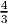
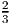
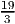
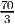

One optimal solution is to take x1 = 0, y1 = 0. Then the primal slack s1 = 0 and the dual slack w1 = 0. Note that the primal and dual both have multiple optimal solutions: any x1 ≥ 0, any y1 ≥ 0. All optimal solutions have s1 = 0 and w1 = 0.
(a) Can use the strict complementarity argument from part (b) below to argue this.
Alternatively, we show from first principles using the dual pair
where we assume (P) has a degenerate optimal solution and (D) has a nondegenerate optimal solution. The matrix A is m × n of rank m, and all vectors are dimensioned appropriately.
The primal problem has a degenerate basic feasible optimal solution x* with basis B, so the dual problem has an optimal solution y* = B-T c B. Since y* is nondegenerate, exactly m of the dual constraints hold at equality. Since x* is degenerate, at least one component of B-T b is equal to zero, say component k. Let p be the kth unit vector in ℝm, denoted ek. We set = B-T (c b - αp) for some small positive α. Then
Hence we can go in the direction d = -B-T ek and still remain dual optimal, so the dual problem has multiple optimal solutions.
(This proof may be easier to follow if you write out the optimal canonical form tableau for the primal problem, and the corresponding dual problem.)
(b) Note that the text contains an example on page 186 where the problems are both degenerate and each has a unique extreme solution.
In general, it is true that if one problem is degenerate then the other has multiple optimal solutions, even if it may only have one extreme optimal solution.
Can appeal to the result stated on slide 12 of lecture 12C that every LP with an optimal solution has a strictly complementary solution. If both the primal and dual solutions are degenerate then they are not strictly complementary, so an alternative optimal solution must exist for at least one of the problems.
Alternatively, to prove this without appealing to strict complementarity, probably need to use something like Farkas.

Optimal solution is x* = (, 0, 0,,, 0), with value .
Optimal solution is x* = (0, 0, 2, 1, 0), with value 8.